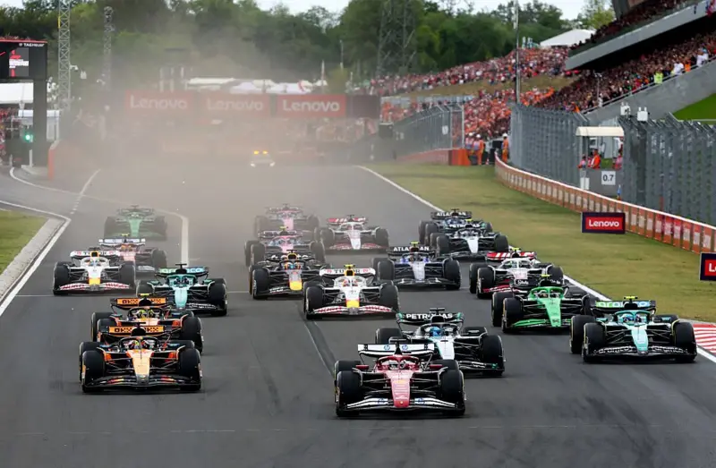

O que é a Fórmula 1?
A Fórmula 1 é uma das principais categorias do automobilismo mundial. Pilotos e equipes competem em circuitos espalhados por diferentes países durante a temporada.
Muito além da velocidade, a F1 envolve estratégia, tecnologia, precisão e trabalho em equipe. Cada detalhe pode fazer a diferença entre a vitória e a derrota.

O que torna a Fórmula 1 especial?
- Carros desenvolvidos com tecnologia de ponta;
- Pilotos entre os melhores do automobilismo mundial;
- Corridas realizadas em diferentes países;
- Estratégias de pneus e pit stops;
- Disputas históricas entre pilotos e equipes.
Temporada 2026
A temporada de 2026 apresenta uma nova geração de carros, equipes e pilotos disputando o Campeonato Mundial de Fórmula 1.
Líderes do campeonato
- Kimi Antonelli - Mercedes
- George Russell - Mercedes
- Lewis Hamilton - Ferrari
A temporada ainda está em andamento e cada corrida pode transformar completamente a disputa pelo campeonato.